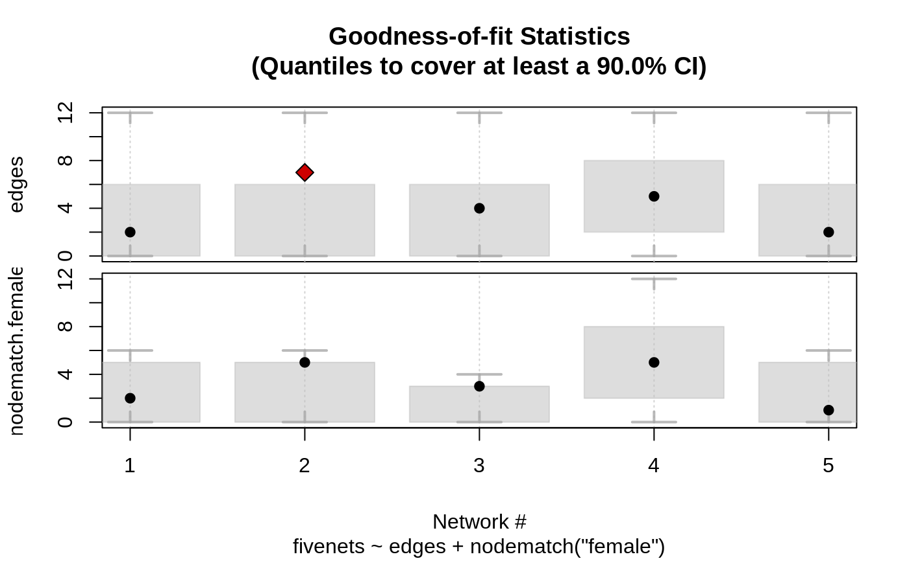

ergmito_gof.RdGoodness of Fit diagnostics for ERGMito models
gof_ergmito( object, GOF = NULL, probs = c(0.05, 0.95), sim_ci = FALSE, R = 50000L, ncores = 1L, ... ) # S3 method for ergmito_gof print(x, digits = 2L, ...) # S3 method for ergmito_gof plot( x, y = NULL, main = NULL, sub = NULL, tnames = NULL, sort_by_ci = FALSE, ... )
| object | An object of class ergmito. |
|---|---|
| GOF | Formula. Additional set of parameters to perform the GOF. |
| probs | Numeric vector. Quantiles to plot (see details). |
| sim_ci | Logical scalar. If |
| R | Integer scalar. Number of simulations to generate (passed to sample).
This is only used if |
| ncores | Integer scalar. Number of cores to use for parallel computations. |
| ... | Further arguments passed to stats::quantile. |
| x | An object of class |
| digits | Number of digits to used when printing |
| y | Ignored. |
| main, sub | Title and subtitle of the plot (see graphics::title). |
| tnames | A named character vector. Alternative names for the terms. |
| sort_by_ci | Logical scalar. When |
An object of class ergmito_gof. This is a list with the following
components:
ci A list of matrices of length nnets(object) with the corresponding
confidence intervals for the statistics of the model.
target.stats A matrix of the target statistics.
ergmito.probs A list of numeric vectors of length nnets(object) with the
probabilities associated to each possible structure of network.
probs The value passed via probs.
model The fitted model.
term.names Character vector. Names of the terms used in the model.
quantile.args A list of the values passed via ....
The Goodness of Fit function uses the fitted ERGMito to calculate a given confidence interval for a set of sufficient statistics. By default (and currently the only available option), this is done on the sufficient statistics specified in the model.
In detail, the algorithm is executed as follow:
For every network in the list of networks do:
Calculate the probability of observing each possible graph in its support using the fitted model.
If sim_ci = TRUE, draw R samples from each set of parameters using the
probabilities computed. Then using the quantile function, calculate the desired
quantiles of the sufficient statistics. Otherwise, compute the quantiles using
the analytic quantiles using the full distribution.'
The plot method is particularly convenient since it graphically shows whether the target statistics of the model (observed statistics) fall within the simulated range.
The print method tries to copy (explicitly) the print method of the
gof function from the ergm R package.
# Fitting the fivenets model data(fivenets, package = "ergmito") fit <- ergmito(fivenets ~ edges + nodematch("female")) # Calculating the gof ans <- gof_ergmito(fit) # Looking at the results ans#> #> Goodness-of-fit for edges #> #> obs min mean max lower upper lower prob. upper prob. #> net 1 2 0 3.7 12 0 6 0.0081 0.96 #> net 2 7 0 3.7 12 0 6 0.0081 0.96 #> net 3 4 0 3.1 12 0 6 0.0206 0.99 #> net 4 5 0 5.6 12 2 8 0.0309 0.95 #> net 5 2 0 3.7 12 0 6 0.0081 0.96 #> #> #> Goodness-of-fit for nodematch.female #> #> obs min mean max lower upper lower prob. upper prob. #> net 1 2 0 2.8 6 0 5 0.022 0.99 #> net 2 5 0 2.8 6 0 5 0.022 0.99 #> net 3 3 0 1.9 4 0 3 0.079 0.95 #> net 4 5 0 5.6 12 2 8 0.031 0.95 #> net 5 1 0 2.8 6 0 5 0.022 0.99 #> #> Note: Exact confidence intervals where used. This implies that the requestes CI may differ from the one used (see ?gof_ergmito). #>plot(ans)